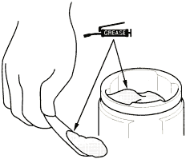
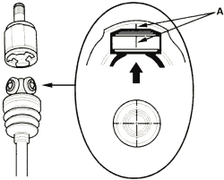
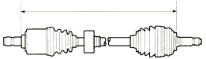
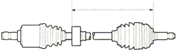

- Pack the inboard joint with the joint grease included in the new driveshaft set.
Grease quantity
Inboard joint:
D14Z6 engine model:
Right driveshaft:
108-126 g (3.8-4.4 oz)
Left driveshaft:
103.5-121.5 g (3.7-4.3 oz)
D16V1 engine model:
100-110 g (3.5-3.9 oz)

- Fit the inboard joint onto the driveshaft and note these items:
- Reinstall the inboard joint onto the driveshaft by aligning the marks (A) on the inboard joint and the rollers.
- Hold the driveshaft so the inboard joint points up to prevent it from falling off.

- Adjust the length of the driveshafts to the figure below, then adjust the boots to halfway between full compression and full extension. Make sure the ends of the boots seat in the grooves of the driveshaft and joint.
Left driveshaft:
D14Z6 engine model:
775-780 mm (30.5-30.7 in.)
D16V1 engine model:
M/T: 784-789 mm (30.9-31.1 in.)
A/T: 787-792 mm (31.0-31.2 in.)
Right driveshaft:
D14Z6 engine model:
486-491 mm (19.1-19.3 in.)
D16V1 engine model:
498-503 mm (19.6-19.8 in.)

- Position the dynamic damper as shown below.
As for the D14Z6 engine model, there is a type with right driveshaft dynamic damper and there is a type without right driveshaft dynamic damper.
Left driveshaft:
478-482 mm (18.8-19.0 in.)
Right driveshaft:
258-262 mm (10.2-10.3 in.)
